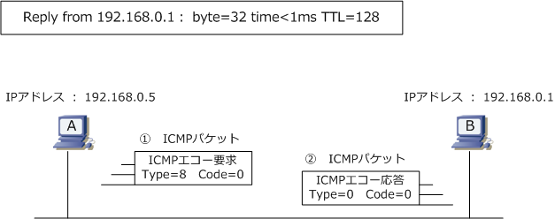
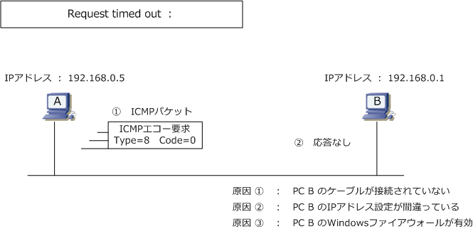
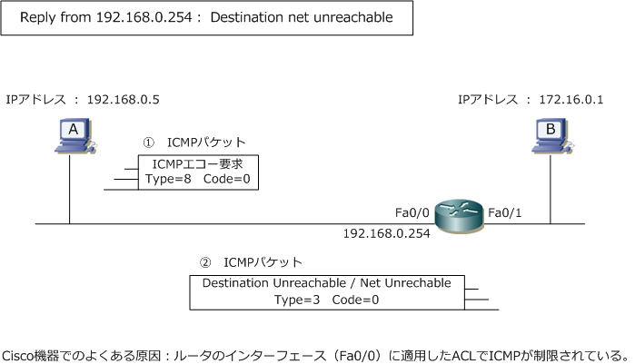
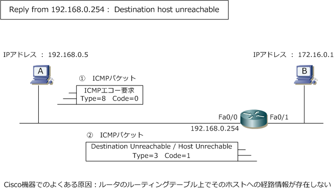

ICMP （PING）
ping（ピング）とは
ping とは、ICMPプロトコルを使用したネットワークの診断プログラムです。PCやネットワークの機器 などで実際に使用するコマンドも “ping” という単語を使用します。このpingにより宛先となるノードと 通信できるか（IPの到達性があるか）どうかを確認することができます。pingが成功すれば送信元と宛先 とでIPの通信に問題がないことが証明されて、pingが失敗すればIP上の通信に問題があると判断できます。
Windows の PING - Reply From（からの応答）
以下はWindowsのコマンドプロンプトでpingを実行した結果。「ping 192.168.0.1」と入力してEnter を押した結果です。192.168.0.1に ping が成功しており、pingコマンドを実行したPCとIPでの通信が できることを証明しています。Windowsの場合は、デフォルトで4回のICMPメッセージが送信されます。

192.168.0.1 に ping を送信しています 32 バイトのデータ： 192.168.0.1 からの応答：バイト数 = 32 時間 <1ms TTL=128 192.168.0.1 からの応答：バイト数 = 32 時間 <1ms TTL=128 192.168.0.1 からの応答：バイト数 = 32 時間 <1ms TTL=128 192.168.0.1 からの応答：バイト数 = 32 時間 <1ms TTL=128
| Reply from 192.168.0.1： byte=32 time<1ms TTL=128（ 英語表示の場合 ） | |
|---|---|
| Reply from | PINGが成功した場合に表示。 |
| byte=32 | ICMPパケットのデータサイズ。デフォルトで32byteのデータが送信。 |
| time<1ms | ICMPパケットの応答までに経過した時間。今回は1ミリ秒（0.001秒）時間を要したことが分かる。 |
| TTL=128 | 何台のLayer3機器を通過することができるのかを示す。残り128台通過できることが分かる。 |
Windows の PING - Request time out（要求がタイムアウトしました）
以下のように「要求がタイムアウトしました」と表示される場合、宛先の機器と通信できないことを意味 しています。ただし、WindowsファイアウォールのようにICMPだけをブロックしているケース、経路途中 にあるルータなどでセキュリティ上の観点でICMP通信を制限しているケースなどでは、このメッセージが 出力されても通信できないのはICMPの通信だけであり、TCP/IPにおける通信が問題ないケースがあります。

192.168.0.1 に ping を送信しています 32 バイトのデータ： 要求がタイムアウトしました。 要求がタイムアウトしました。 要求がタイムアウトしました。 要求がタイムアウトしました。
Windows の PING - Destination net unreachable（宛先ネットワークに到達できません）
以下のように「宛先ネットワークに到達できません」と表示されている場合はPINGが失敗しています。 172.16.0.1にPINGをした結果、172.16.0.1からの応答はありませんが、代わりに 192.168.0.254 が 応答している状態です。これは、192.168.0.254 まではパケットが到達したけれど、ルータの時点で ルーティング情報がなくて、宛先ネットワークに対してパケット転送できなかったことを示しています。
※ Ciscoルータのインターフェースに、ICMPを拒否するアクセスリストを適用している時も、同じICMPメッセージをPCは受信。

172.16.0.1 に ping を送信しています 32 バイトのデータ： 192.168.0.254 からの応答：宛先ネットワークに到達できません。 192.168.0.254 からの応答：宛先ネットワークに到達できません。 192.168.0.254 からの応答：宛先ネットワークに到達できません。 192.168.0.254 からの応答：宛先ネットワークに到達できません。
Windows の PING - Destination host unreachable（宛先ホストに到達できません）
以下のように「宛先ホストに到達できません」と表示されている場合もPINGが失敗しています。この エラーは「net」ではなく「host」です。このエラーメッセージは192.168.0.254のルータまでは到達 して宛先のネットワークへの到達性があるが、該当する機器（ホスト）に到達できない事を意味します。 または、この機器（172.16.0.1）へのルーティングが見つけられないことを意味するメッセージです。
※ Ciscoルータの場合、172.16.0.1へのルーティングが見つけられないと、pingを実行したホストに対してこのメッセージを返答。

172.16.0.1 に ping を送信しています 32 バイトのデータ： 192.168.0.254 からの応答：宛先ホストに到達できません。 192.168.0.254 からの応答：宛先ホストに到達できません。 192.168.0.254 からの応答：宛先ホストに到達できません。 192.168.0.254 からの応答：宛先ホストに到達できません。
Windows の PING - TTL expired in transit（転送中にTTLが期限切れになりました）
その他のエラーメッセージに「 192.168.0.254からの応答： 転送中にTTLが期限切れになりました 」 があります。TTLの超過によるエラーを 192.168.0.254 からpingを実行したホストに伝達しています。 つまり、宛先にパケットを届けるために128台以上のルータ（L3）を経由することが必要となった結果、 途中でパケットが廃棄されたことを意味します。しかし、このエラーメッセージが出力される場合には ルータ側の設定ミスによるルーティングループが原因であることがほとんどです。
172.16.0.1 に ping を送信しています 32 バイトのデータ： 192.168.0.254 からの応答：転送中に TTL が期限切れになりました。 192.168.0.254 からの応答：転送中に TTL が期限切れになりました。 192.168.0.254 からの応答：転送中に TTL が期限切れになりました。 192.168.0.254 からの応答：転送中に TTL が期限切れになりました。